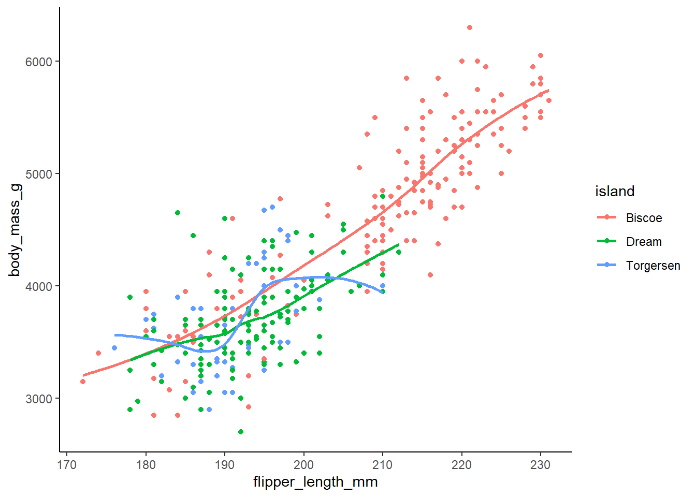
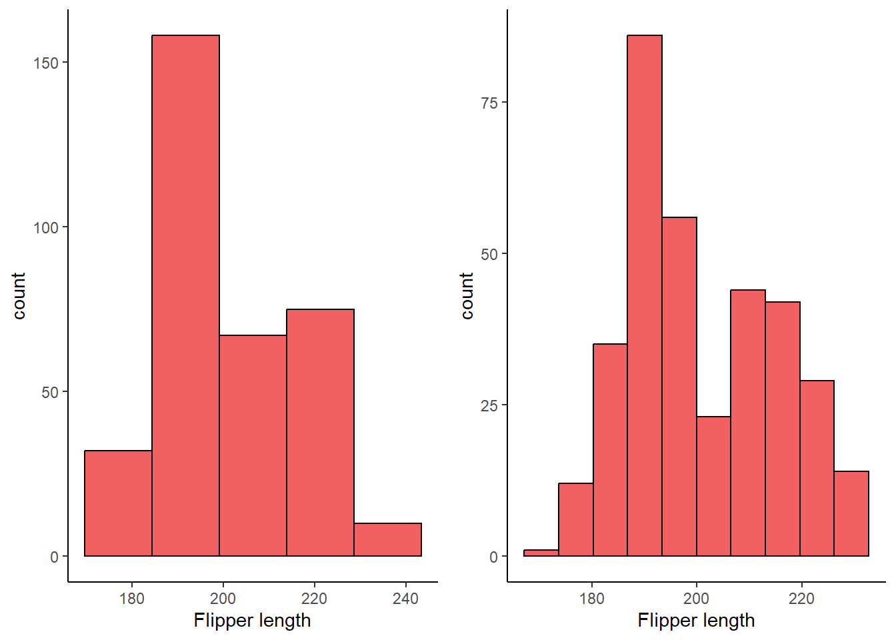
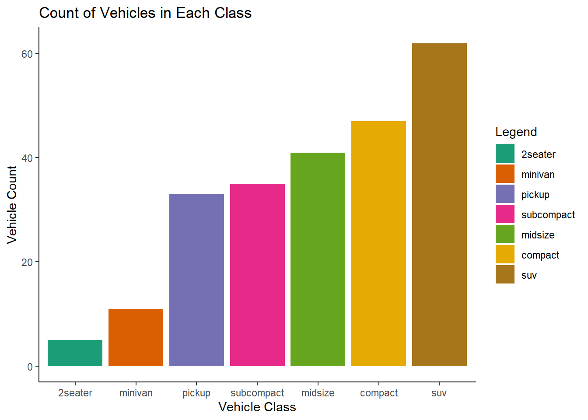

pacman::p_load(tidyverse, palmerpenguins, gridExtra)Chapter 1
Chapter 1 of R4DS covers the basics of data visualization with GGPLOT in R. This page will work through a subset of the chapter’s prompts. I will use the Palmer Penguins dataset to create some graphics. I’ll set up by loading the tidyverse and palmerpenguins packages, and will also load gridExtra to facilitate displaying some of the graphs.
1.2.5 Exercises:
Exercise 1.2.5.1
How many rows are in penguins? How many columns?
1 answer: 344 rows and 8 columns
nrow(penguins)[1] 344ncol(penguins)[1] 8Exercise 1.2.5.2
What does the bill_depth_mm variable in the penguins data frame describe? Read the help for ?penguins to find out.
2 answer: This variable contains numbers denoting bill depth (millimeters)
#?penguinsExercise 1.2.5.3
Make a scatterplot of bill_depth_mm vs. bill_length_mm. That is, make a scatterplot with bill_depth_mm on the y-axis and bill_length_mm on the x-axis. Describe the relationship between these two variables.
3 answer: with the scatterplot alone (plot 1), there does not appear to be a strong relationship between bill length and depth. If we add a LOESS line with geom_smooth (plot 2), it will show us that there is a nonlinear relationship between these two variables.
In plot 2, we can see that at first, bill depth increases with increases in bill length. Eventually this trend changes and bill depth begins to fall with further increases in length, but then eventually rises again.
penguins %>%
ggplot(aes(bill_length_mm, bill_depth_mm)) +
geom_point(shape = 4, na.rm = TRUE) +
theme_classic() +
labs(
x = "Bill Length",
y = "Bill Depth",
title = "Relationship Between Bill Length and Depth Among Penguins in the\nPalmer Archipelago")
penguins %>%
ggplot(aes(bill_length_mm, bill_depth_mm)) +
geom_point(shape = 4, na.rm = TRUE) +
geom_smooth(method = loess, formula = y ~ x, color = "black", na.rm = TRUE) +
theme_classic() +
labs(
x = "Bill Length",
y = "Bill Depth",
title = "Relationship Between Bill Length and Depth Among Penguins in the\nPalmer Archipelago")
Exercise 1.2.5.4
What happens if you make a scatterplot of species vs. bill_depth_mm? What might be a better choice of geom?
4 answer: scatterplots are not a good way to visualize the relationship between a categorical and continuous variable. Instead, we can use a boxplot.
penguins %>%
ggplot(aes(species, bill_depth_mm)) +
geom_point(shape = 4, na.rm = TRUE) +
theme_classic() +
labs(
x = "Species",
y = "Bill Depth",
title = "Relationship Between Species and Bill Depth Among Penguins in the\nPalmer Archipelago")penguins %>%
ggplot(aes(species, bill_depth_mm, fill = species)) +
geom_boxplot(na.rm = TRUE) +
theme_classic() +
labs(
x = "Species",
y = "Bill Depth",
title = "Relationship Between Species and Bill Depth Among Penguins in the\nPalmer Archipelago")Exercise 1.2.5.5
Why does the following give an error and how would you fix it?
5 answer: because the aesthetics (x and y variables) have not been specified.
ggplot(data = penguins) + geom_point()
ggplot(data = penguins, aes(flipper_length_mm, body_mass_g)) +
geom_point(shape = 4, na.rm = TRUE) +
theme_classic() +
labs(
x = "Flipper Length",
y = "Body Mass",
title = "Relationship Between Flipper Length and Body Mass Among Penguins in the\nPalmer Archipelago")Exercise 1.2.5.6
What does the na.rm argument do in geom_point()? What is the default value of the argument? Create a scatterplot where you successfully use this argument set to TRUE.
6 answer: na.rm determines whether missing values are removed with a warning or silently. The default is set to FALSE, which means the missing values will be removed with a warning.
penguins %>%
ggplot(aes(bill_length_mm, bill_depth_mm)) +
geom_point(shape = 4, na.rm = TRUE) +
theme_classic() +
labs(
x = "Bill Length",
y = "Bill Depth",
title = "Relationship Between Bill Length and Depth Among Penguins in the\nPalmer Archipelago")Exercise 1.2.5.7
Add the following caption to the plot you made in the previous exercise: “Data come from the palmerpenguins package.” Hint: Take a look at the documentation for labs().
penguins %>%
ggplot(aes(bill_length_mm, bill_depth_mm)) +
geom_point(shape = 4, na.rm = TRUE) +
theme_classic() +
labs(
x = "Bill Length",
y = "Bill Depth",
title = "Relationship Between Bill Length and Depth Among Penguins in the\nPalmer Archipelago",
caption = "Data come from the palmerpenguins package.")Exercise 1.2.5.8
Recreate the following visualization. What aesthetic should bill_depth_mm be mapped to? And should it be mapped at the global level or at the geom level?
8 answer: bill_depth_mm should be mapped to color at the geom_point level so that geom_smooth is displayed as one line
penguins %>%
ggplot(aes(flipper_length_mm, body_mass_g)) +
geom_point(aes(color = bill_depth_mm), na.rm = TRUE) +
geom_smooth(method = loess, formula = y ~ x, na.rm = TRUE) +
theme_classic()Exercise 1.2.5.9
Run this code in your head and predict what the output will look like. Then, run the code in R and check your predictions.
9 answer: the x axis will have flipper lengths and the y axis will have body mass. There are three islands, so the graph will have three sets of points color-coded to match the island the penguins are from. There will be three smoothing lines that also correspond to each island, and these lines will not display the confidence intervals.
ggplot(
data = penguins,
mapping = aes(x = flipper_length_mm, y = body_mass_g, color = island)
) +
geom_point(na.rm = TRUE) +
geom_smooth(se = FALSE, na.rm = TRUE, method = loess, formula = y ~ x) +
theme_classic()
Exercise 1.2.5.10
Will these two graphs look different? Why/why not?
10 answer: no, they will look the same. The first maps aesthetics at the global level whereas the second maps aesthetics at the local level. However, the way the local aesthetics are mapped will produce the same result as the global mapping because the local mappings for both geom_point and geom_smooth are identical.
ggplot(
data = penguins,
mapping = aes(x = flipper_length_mm, y = body_mass_g)
) +
geom_point(na.rm = TRUE) +
geom_smooth(na.rm = TRUE, formula = y ~ x, method = loess) +
theme_classic()ggplot() +
geom_point(
data = penguins,
mapping = aes(x = flipper_length_mm, y = body_mass_g), na.rm = TRUE) +
geom_smooth(
data = penguins,
formula = y ~ x,
method = loess,
mapping = aes(x = flipper_length_mm, y = body_mass_g), na.rm = TRUE) +
theme_classic()
1.4.3 Exercises:
Exercise 1.4.3.1
Make a bar plot of species of penguins, where you assign species to the y aesthetic. How is this plot different?
1 answer: the bars are horizontal as opposed to vertical.
ggplot(penguins, aes(y = species, fill = species)) +
geom_bar() +
theme_classic()Exercise 1.4.3.2
How are the following two plots different? Which aesthetic, color or fill, is more useful for changing the color of bars?
2 answer: color is applied to the outline of the bars whereas fill applies to the entire bar except the outline. For this graph, filling is more useful for changing the color of the bars.
ggplot(penguins, aes(x = species)) +
geom_bar(color = "red") +
theme_classic()ggplot(penguins, aes(x = species)) +
geom_bar(fill = "red") +
theme_classic()Exercise 1.4.3.3
3 What does the bins argument in geom_histogram() do?
3 answer: this argument specifies the number of bins(bars) included in the histogram.
plot_4.1.3.3a <- ggplot(penguins, aes(x = flipper_length_mm)) +
geom_histogram(
bins = 5,
fill = "firebrick2",
color = "black",
alpha = 0.75,
na.rm = TRUE
) +
labs(
x = "Flipper length") +
theme_classic()
plot_4.1.3.3b <- ggplot(penguins, aes(x = flipper_length_mm)) +
geom_histogram(
bins = 10,
fill = "firebrick2",
color = "black",
alpha = 0.75,
na.rm = TRUE
) +
labs(
x = "Flipper length") +
theme_classic()
grid.arrange(plot_4.1.3.3a, plot_4.1.3.3b, ncol = 2)
##Exercise 1.4.3.4
Make a histogram of the carat variable in the diamonds dataset that is available when you load the tidyverse package. Experiment with different binwidths. What binwidth reveals the most interesting patterns?
4 answer: the 0.05 binwidth reveals an interesting pattern of clustering around whole and half numbers, such as carats of 1.5 and 2.
summary(diamonds$carat) Min. 1st Qu. Median Mean 3rd Qu. Max.
0.2000 0.4000 0.7000 0.7979 1.0400 5.0100 #x var ranges 0.2 to 5.01, useful for considering appropriate binwidth
ggplot(diamonds, aes(x = carat)) +
geom_histogram(
binwidth = 0.40,
fill = "chartreuse",
color = "black",
alpha = 0.75,
na.rm = TRUE
) +
theme_classic()ggplot(diamonds, aes(x = carat)) +
geom_histogram(
binwidth = 0.25,
fill = "lightcoral",
color = "black",
alpha = 0.75,
na.rm = TRUE
) +
theme_classic()ggplot(diamonds, aes(x = carat)) +
geom_histogram(
binwidth = 0.05,
fill = "aquamarine",
color = "black",
alpha = 0.75,
na.rm = TRUE
) +
theme_classic()1.5.5 Exercises:
Exercise 1.5.5.1
1 The mpg data frame that is bundled with the ggplot2 package contains 234 observations collected by the US Environmental Protection Agency on 38 car models. Which variables in mpg are categorical? Which variables are numerical? (Hint: Type ?mpg to read the documentation for the dataset.) How can you see this information when you run mpg?
1 answer:
categorical variables: manufacturer, model name, trans, drv, fl, class
numerical variables: displ, year, cyl, cty, hwy
# ?mpg
glimpse(mpg)Rows: 234
Columns: 11
$ manufacturer <chr> "audi", "audi", "audi", "audi", "audi", "audi", "audi", "…
$ model <chr> "a4", "a4", "a4", "a4", "a4", "a4", "a4", "a4 quattro", "…
$ displ <dbl> 1.8, 1.8, 2.0, 2.0, 2.8, 2.8, 3.1, 1.8, 1.8, 2.0, 2.0, 2.…
$ year <int> 1999, 1999, 2008, 2008, 1999, 1999, 2008, 1999, 1999, 200…
$ cyl <int> 4, 4, 4, 4, 6, 6, 6, 4, 4, 4, 4, 6, 6, 6, 6, 6, 6, 8, 8, …
$ trans <chr> "auto(l5)", "manual(m5)", "manual(m6)", "auto(av)", "auto…
$ drv <chr> "f", "f", "f", "f", "f", "f", "f", "4", "4", "4", "4", "4…
$ cty <int> 18, 21, 20, 21, 16, 18, 18, 18, 16, 20, 19, 15, 17, 17, 1…
$ hwy <int> 29, 29, 31, 30, 26, 26, 27, 26, 25, 28, 27, 25, 25, 25, 2…
$ fl <chr> "p", "p", "p", "p", "p", "p", "p", "p", "p", "p", "p", "p…
$ class <chr> "compact", "compact", "compact", "compact", "compact", "c…Exercise 1.5.5.2
Make a scatterplot of hwy vs. displ using the mpg data frame. Next, map a third, numerical variable to color, then size, then both color and size, then shape. How do these aesthetics behave differently for categorical vs. numerical variables?
2 answer: color gradiants and sizes can accomodate continuous variables but shapes cannot because there are only so many shapes. The shapes option is suited for categorical variables. Making a GGPLOT that assigns shape to a continuous variables will generate an error.
plot_2.5.5.2a <- ggplot(mpg, aes(displ, hwy)) +
geom_point() +
theme_classic()
plot_2.5.5.2b <- ggplot(mpg, aes(displ, hwy, color = cty)) +
geom_point() +
theme_classic()
plot_2.5.5.2c <- ggplot(mpg, aes(displ, hwy, size = cty)) +
geom_point() +
theme_classic()
plot_2.5.5.2d <- ggplot(mpg, aes(displ, hwy, color = cty, size = cty)) +
geom_point() +
theme_classic()
# ggplot(mpg, aes(displ, hwy, shape = cty)) +
# geom_point()
grid.arrange(plot_2.5.5.2a, plot_2.5.5.2b, plot_2.5.5.2c, plot_2.5.5.2d, nrow = 2, ncol = 2)Exercise 1.5.5.3
In the scatterplot of hwy vs. displ, what happens if you map a third variable to linewidth?
3 answer: nothing happens when this is done with a scatterplot, because linewidth applies to geom_lines.
ggplot(mpg, aes(hwy, displ, linewidth = cty)) +
geom_point() +
theme_classic()Exercise 1.5.5.4
What happens if you map the same variable to multiple aesthetics?
4 answer: the points are modified in multiple ways. Below, “cty” impacts both the size and the color of the points. For example, low “cty” values are darker and smaller, while high “cty” values are lighter and larger.
ggplot(mpg, aes(
hwy,
displ,
color = cty,
size = cty
)) +
geom_point() +
theme_classic()Exercise 1.5.5.5
Make a scatterplot of bill_depth_mm vs. bill_length_mm and color the points by species. What does adding coloring by species reveal about the relationship between these two variables? What about faceting by species?
5 answer: Adelie species has smaller lengths and higher depths, whereas Gentoo species has larger lengths and smaller depths. The Chinstrap species has depths similar to Adelie and lengths similar to Gentoo. Faceting by species shows the same thing but is just an alternative way to visualize this relationship.
ggplot(penguins, aes(bill_depth_mm, bill_length_mm, color = species)) +
geom_point(na.rm = TRUE) +
theme_classic() +
labs(
title = "Relationship Between Bill Length and Depth by Species",
x = "Bill depth",
y = "Bill length"
)ggplot(penguins, aes(bill_depth_mm, bill_length_mm, color = species)) +
geom_point(na.rm = TRUE) +
facet_wrap( ~ species) +
theme_classic() +
labs(
title = "Relationship Between Bill Length and Depth by Species",
x = "Bill depth",
y = "Bill length"
)Exercise 1.5.5.6
Why does the following yield two separate legends? How would you fix it to combine the two legends?
6 answer: there is a legend for color and a legend for shape. This could be fixed by adding labs() mapping both color and shape to species
ggplot(
data = penguins,
mapping = aes(
x = bill_length_mm,
y = bill_depth_mm,
color = species,
shape = species
)
) +
geom_point(na.rm = TRUE) +
labs(
color = "Species",
shape = "Species",
title = "Relationship Between Bill Length and Depth by Species",
x = "Bill depth",
y = "Bill length") +
theme_classic()Exercise 1.5.5.7
Create the two following stacked bar plots. Which question can you answer with the first one? Which question can you answer with the second one?
For the first graph, you could answer a question such as “what is the composition of penguin species by island?” For example, approximately 75% of the penguins on Biscoe are part of the Gentoo species.
ggplot(penguins, aes(x = island, fill = species)) +
geom_bar(position = "fill") +
theme_classic()For the second graph, you could answer a question such as “how much of each species is concentrated on each island?” For example, approximately 30% of Adelie penguins are located on Torgensen.
ggplot(penguins, aes(x = species, fill = island)) +
geom_bar(position = "fill") +
theme_classic()1.6.1 Exercises:
Exercise 1.6.1.1
Run the following lines of code. Which of the two plots is saved as mpg-plot.png? Why?
1 answer: the second plot was saved because ggsave saves the last plot made.
ggplot(mpg, aes(x = fct_rev(fct_infreq(class)), fill = fct_rev(fct_infreq(class)))) +
geom_bar() +
scale_fill_brewer(palette = "Dark2") +
theme_classic() +
labs(
title = "Count of Vehicles in Each Class",
x = "Vehicle Class",
y = "Vehicle Count",
fill = "Legend"
)
ggplot(mpg, aes(x = cty, y = hwy)) +
geom_point() +
theme_classic() +
labs(
x = "City MPG",
y = "Highway MPG",
title = "City vs. Highway MPG"
)ggsave("./output/mpg-plot.png")Saving 7 x 5 in imageExercise 1.6.1.2
What do you need to change in the code above to save the plot as a PDF instead of a PNG? How could you find out what types of image files would work in ggsave()?
2 answer: change the file type to pdf within quotes. You can find out what other file types are possible using ?ggsave
ggsave("./output/mpg-plot.pdf")Saving 7 x 5 in image# ?ggsave
# Device to use. Can either be a device function (e.g. png), or one of "eps", "ps", "tex" (pictex), "pdf", "jpeg", "tiff", "png", "bmp", "svg" or "wmf" (windows only).References
Wickham, H., Çetinkaya-Rundel, M., & Grolemund, G. (2023). R for Data Science: Import, Tidy, transform, visualize, and model data. O’Reilly. https://r4ds.hadley.nz/